Top-k-Suche: zwölf Kandidaten aus 346Top-k search: twelve candidates out of 346
Die erste Stufe ist die Vektorsuche aus Lab 05: Die Frage wird mit query: eingebettet, der Vektor mit allen 346 Chunk-Vektoren multipliziert, und die zwölf höchsten Werte bleiben (RETRIEVE_K=12). Zwölf statt fünf, weil die nächste Stufe eine Auswahl braucht, aus der sie die richtigen fünf ziehen kann: Overfetch. Bei 346 Chunks ist die Suche exakt, jeder Vektor wird verglichen (SimpleVectorStore von LlamaIndex, eine Millisekunde). Bei Millionen Chunks ginge das nicht mehr; dann sortieren Verfahren wie HNSW (Malkov und Yashunin 2018) die Vektoren in einen Nachbarschaftsgraphen und finden Näherungslösungen in Millisekunden. Das Fallbeispiel braucht keinen solchen Index, und das ist eine bewusste Entscheidung: kein Datenbankserver, keine Cloud, ein JSON auf der Platte.
The first stage is the vector search from lab 05: the question is embedded with query: , the vector multiplied with all 346 chunk vectors, and the twelve highest values remain (RETRIEVE_K=12). Twelve instead of five because the next stage needs a selection from which to draw the right five: overfetch. With 346 chunks the search is exact, every vector is compared (LlamaIndex's SimpleVectorStore, one millisecond). With millions of chunks that would no longer work; then methods such as HNSW (Malkov and Yashunin 2018) arrange the vectors into a neighbourhood graph and find approximate solutions in milliseconds. The case study needs no such index, and that is a deliberate decision: no database server, no cloud, one JSON on disk.
VektorspeicherVector stores
Der Index des Fallbeispiels liegt in storage/: default__vector_store.json mit den Vektoren, docstore.json mit den Texten und Metadaten, index_store.json mit der Struktur, dazu .cache_key mit dem Fingerprint (Lab 09). Für mehr Dokumente nennt die technische Dokumentation drei Alternativen, keine davon ist installiert. Stand der Dokumentationen: 19.09.2026.
The case study's index sits in storage/: default__vector_store.json with the vectors, docstore.json with texts and metadata, index_store.json with the structure, plus .cache_key with the fingerprint (lab 09). For more documents the technical documentation names three alternatives, none of which is installed. Documentation as of 19 Sept 2026.
| SpeicherStore | Was er istWhat it is | SucheSearch | Passt, wennFits when |
|---|---|---|---|
| SimpleVectorStore (Fallbeispiel)(case study) | JSON-Dateien, im Prozess geladenJSON files, loaded in-process | exakt, alle Vektorenexact, all vectors | ein Dokument, wenige tausend Chunks, ein Rechnerone document, a few thousand chunks, one machine |
| PostgreSQL + pgvector | Erweiterung der relationalen Datenbank um einen VektortypExtension of the relational database with a vector type | exakt oder HNSW/IVFFlatexact or HNSW/IVFFlat | Vektoren neben Fachdaten, SQL-Filter, vorhandenes Postgresvectors next to business data, SQL filters, existing Postgres |
| Qdrant | Eigener Vektordatenbank-ServerDedicated vector database server | HNSW, Filter über Payloadfilters over payload | Millionen Chunks, Metadatenfilter, mehrere Anwendungenmillions of chunks, metadata filters, several applications |
| Chroma | Leichtgewichtige Datenbank für Dokumente und EmbeddingsLightweight database for documents and embeddings | HNSW | Prototypen, lokale Anwendungenprototypes, local applications |
Hybrid: der Fehlercode-ZuschlagHybrid: the error-code boost
Ein Fehlercode ist eine seltene Zeichenfolge ohne Bedeutung im Vektorraum; die Vektorsuche verpasst die E:18-Zeile. Das Fallbeispiel ergänzt sie deshalb um eine zweite Quelle: extract_error_codes() zieht aus der Frage alle Codes in den Schreibweisen E:18, E18, „Fehler 18“ und „Fehlercode: 18“ und normalisiert sie; _HybridRetriever legt jeden Chunk, der denselben Code enthält, mit Score 1 vor die Vektortreffer. Für E:18 ist das genau ein Chunk. Die Wortgrenze im Muster sorgt dafür, dass E:180 nicht als E:18 gilt; der Prüfbericht hält fest, dass der Lookup vorher Teilzeichenfolgen traf.
An error code is a rare string without meaning in vector space; vector search misses the E:18 row. The case study therefore adds a second source: extract_error_codes() pulls all codes in the spellings E:18, E18, “Fehler 18” and “Fehlercode: 18” from the question and normalises them; _HybridRetriever places every chunk that contains the same code before the vector hits at score 1. For E:18 that is exactly one chunk. The word boundary in the pattern ensures that E:180 does not count as E:18; the audit report records that the lookup previously matched substrings.
_CODE_RE = re.compile(r"(?:\bE\s*:?\s*|\bfehler(?:code)?\s*:?\s*)(\d{1,3})\b", re.IGNORECASE)
def extract_error_codes(query: str) -> set[str]:
codes = set()
for m in _CODE_RE.finditer(query or ""):
n = m.group(1)
codes.add(f"E:{n}")
codes.add(f"E{n}")
return codes
Der Begriff Hybrid-Suche meint sonst meist die Kombination von Vektorsuche mit BM25, der klassischen Stichwortsuche (Robertson und Zaragoza 2009): Sie zählt exakte Wortübereinstimmungen, gewichtet seltene Wörter höher und lange Dokumente niedriger. Zwei Ranglisten werden dann mit Reciprocal Rank Fusion verschmolzen (Cormack et al. 2009): Jeder Treffer bekommt 1 ÷ (k + Rang) aus jeder Liste, k meist 60, und die Summen entscheiden; so lassen sich Scores verschiedener Skalen vereinen, ohne sie zu vergleichen. Das Fallbeispiel nutzt weder BM25 noch RRF; sein Zuschlag ist eine gezielte Regex für das eine Muster, das die Vektorsuche verlässlich verpasst. Die technische Dokumentation sagt das ausdrücklich. The term hybrid search otherwise mostly means combining vector search with BM25, the classic keyword search (Robertson and Zaragoza 2009): it counts exact word matches, weights rare words higher and long documents lower. Two ranked lists are then merged with reciprocal rank fusion (Cormack et al. 2009): every hit receives 1 ÷ (k + rank) from every list, k usually 60, and the sums decide; this unifies scores of different scales without comparing them. The case study uses neither BM25 nor RRF; its boost is a targeted regex for the one pattern that vector search reliably misses. The technical documentation says so explicitly.
Reranker: der Cross-EncoderReranker: the cross-encoder
Die dritte Stufe liest jedes Paar aus Frage und Kandidat gemeinsam durch ein Netz und gibt einen Score: ein Cross-Encoder (Nogueira und Cho 2019). Das ist genauer als der Vergleich zweier getrennt berechneter Vektoren, weil das Netz Frage und Passage Wort für Wort aufeinander beziehen kann, aber es kostet je Paar einen eigenen Durchlauf; deshalb läuft es nur über die zwölf Kandidaten, nicht über alle Chunks. Das Fallbeispiel nutzt BAAI/bge-reranker-v2-m3 (mehrsprachig, 568 Millionen Parameter, Apache-2.0), eingebunden über LlamaIndex’ SentenceTransformerRerank mit top_n=5. Der Reranker liefert Logits; das Fallbeispiel setzt ausdrücklich eine Sigmoid-Funktion darauf, damit die Scores zwischen 0 und 1 liegen und die Schwelle nicht von Bibliotheksvorgaben abhängt. Für E:18 ergibt das 0,562 für den richtigen Chunk und unter 0,002 für alle anderen: Der Cross-Encoder spreizt, wo der Kosinus alles zwischen 0,81 und 0,84 legt.
The third stage reads every pair of question and candidate together through a network and outputs a score: a cross-encoder (Nogueira and Cho 2019). This is more precise than comparing two separately computed vectors, because the network can relate question and passage word by word, but it costs a separate pass per pair; that is why it runs only over the twelve candidates, not over all chunks. The case study uses BAAI/bge-reranker-v2-m3 (multilingual, 568 million parameters, Apache-2.0), integrated via LlamaIndex's SentenceTransformerRerank with top_n=5. The reranker outputs logits; the case study explicitly applies a sigmoid so that scores lie between 0 and 1 and the threshold does not depend on library defaults. For E:18 this yields 0.562 for the right chunk and below 0.002 for all others: the cross-encoder spreads where the cosine puts everything between 0.81 and 0.84.
reranker = SentenceTransformerRerank(model="BAAI/bge-reranker-v2-m3", top_n=FINAL_K) # BGE liefert Logits. Ein explizites Sigmoid macht die Schwelle unabhaengig von Bibliotheksvorgaben. reranker._model.activation_fn = torch.nn.Sigmoid()
Im Browser vorberechnet.Precomputed in the browser. Der Reranker hat als ONNX-Datei 279 MB und läuft nicht in dieser Seite. Für die 24 Katalogfragen wurden seine Scores mit der Python-Umgebung des Fallbeispiels berechnet (tools/embed_fragen.py); die zehn Evaluationsfragen stimmen mit dem Protokoll des Fallbeispiels auf vier Nachkommastellen überein. Für eigene Fragen zeigt der Stepper nur die Vektor- und die Hybridstufe live.As an ONNX file the reranker has 279 MB and does not run in this page. For the 24 catalogue questions its scores were computed with the case study's Python environment (tools/embed_fragen.py); the ten evaluation questions match the case study's log to four decimals. For your own questions the stepper shows only the vector and hybrid stages live.
Schwelle und BodenThreshold and floor
Nach dem Reranker entscheidet is_grounded(): Liegt der beste Score unter GUARDRAIL_MIN_SCORE=0.15, gilt die Frage als nicht vom Handbuch gedeckt, und die Anwendung antwortet ohne Modellaufruf „Dazu finde ich in dieser Bedienungsanleitung leider keine Information“. select_context_nodes() setzt zusätzlich einen relativen Boden: Nur Kandidaten mit Score ≥ max(0,15; 0,5 × bester Score) kommen in den Kontext (CONTEXT_SCORE_RATIO=0.5). Dazu die Regel aus server.py: Jeder in der Frage genannte Fehlercode muss im Kontext vorkommen, sonst wird abgelehnt; E:180 darf sich die Bedeutung von E:18 nicht ausleihen. Der Code nennt die 0,15 einen Projektparameter, „keine kalibrierte Wahrheitswahrscheinlichkeit“: Sie wurde an den Scores der Evaluationsfragen (ab 0,119) und der Fremdfragen (höchstens 0,0274) gewählt. Lab 08 zeigt den Preis: Eine der zehn Handbuchfragen liegt unter der Schwelle.
After the reranker, is_grounded() decides: if the best score lies below GUARDRAIL_MIN_SCORE=0.15, the question counts as not covered by the manual, and the application replies without a model call “Dazu finde ich in dieser Bedienungsanleitung leider keine Information”. select_context_nodes() additionally sets a relative floor: only candidates with score ≥ max(0.15; 0.5 × best score) enter the context (CONTEXT_SCORE_RATIO=0.5). Plus the rule from server.py: every error code named in the question must occur in the context, otherwise refuse; E:180 must not borrow the meaning of E:18. The code calls the 0.15 a project parameter, “no calibrated probability of truth”: it was chosen on the scores of the evaluation questions (from 0.119) and the off-topic questions (at most 0.0274). Lab 08 shows the price: one of the ten manual questions lies below the threshold.


Backend.retrieve() in server.py.The path of the E:18 question through Backend.retrieve() in server.py.Ablation: was jede Stufe bringtAblation: what every stage contributes
Das Fallbeispiel hat die drei Varianten auf denselben zehn Fragen gemessen (eval/run_eval.py, Protokolle vom 19.09.2026). Ein Treffer heißt: Mindestens ein erwartetes Stichwort steht in den fünf Kandidaten; Hit@1 heißt: schon im ersten. MRR ist der mittlere Kehrwert des ersten Trefferrangs, Abdeckung der Anteil der erwarteten Stichwörter, die gefunden wurden. Die Zahlen messen die Suche, nicht die Richtigkeit der Antwort (Lab 08).
The case study measured the three variants on the same ten questions (eval/run_eval.py, logs of 19 Sept 2026). A hit means: at least one expected keyword appears in the five candidates; hit@1 means: already in the first. MRR is the mean reciprocal of the first hit's rank, coverage the share of expected keywords found. The numbers measure retrieval, not answer correctness (lab 08).
| VarianteVariant | Hit@5 | Hit@1 | MRR | AbdeckungCoverage |
|---|---|---|---|---|
| Vektor alleinVector only | 80 % | 60 % | 0,700 | 64,5 % |
| Hybrid ohne RerankerHybrid without reranker | 90 % | 70 % | 0,800 | 82,0 % |
| Hybrid mit RerankerHybrid with reranker | 100 % | 100 % | 1,000 | 93,5 % |
Die Stufen helfen verschiedenen Fragen. Der Fehlercode-Zuschlag hebt E:18 von „nicht gefunden“ auf Rang 1. Der Reranker hebt „Wasser läuft unter meiner Waschmaschine aus“ und „Die Waschlauge wird nicht abgepumpt“ von Rang 2 auf Rang 1 und findet für „Es läuft kein Wasser in die Maschine ein“ überhaupt erst einen Treffer, den Vektor- und Hybridstufe nicht in den ersten fünf hatten. Der Preis: rund 90 Sekunden für zehn Fragen mit Reranker auf der CPU gegenüber einer Sekunde ohne. The stages help different questions. The error-code boost lifts E:18 from “not found” to rank 1. The reranker lifts “Wasser läuft unter meiner Waschmaschine aus” and “Die Waschlauge wird nicht abgepumpt” from rank 2 to rank 1 and, for “Es läuft kein Wasser in die Maschine ein”, finds a hit at all that the vector and hybrid stages did not have in the first five. The price: about 90 seconds for ten questions with reranker on the CPU versus one second without.
Der Such-StepperThe search stepper
Wählen Sie eine Katalogfrage und lesen Sie die Stufen von oben nach unten. Die Regler ändern Schwelle und Verhältnis live; Stufe 4 und 5 rechnen mit der Logik aus pruefung.js, die die Python-Funktionen zeichengenau nachbildet (ein Test prüft alle 24 Fragen gegen die Python-Ergebnisse). Mit geladenem Modell tippen Sie eigene Fragen; dann laufen Stufe 1 und 2 in Ihrem Browser.
Choose a catalogue question and read the stages from top to bottom. The sliders change threshold and ratio live; stages 4 and 5 compute with the logic from pruefung.js, which reproduces the Python functions exactly (a test checks all 24 questions against the Python results). With the model loaded you type your own questions; then stages 1 and 2 run in your browser.
ÜbungenExercises
Sechs Übungen: E:18 durch die Stufen verfolgen, die Regex prüfen, die Pipeline ordnen, den Boden rechnen, vier Verfahren zuordnen und eine Ablehnung deuten.Six exercises: follow E:18 through the stages, test the regex, order the pipeline, compute the floor, assign four methods and interpret a refusal.
ZusammenfassungSummary
- Top-k mit Overfetch: zwölf Kandidaten sammeln, damit die nächste Stufe fünf gute auswählen kann.Top-k with overfetch: collect twelve candidates so that the next stage can select five good ones.
- Hybrid sichert, was der Vektorraum verpasst: hier Fehlercodes per Regex; allgemein BM25 mit RRF.Hybrid secures what vector space misses: here error codes via regex; in general BM25 with RRF.
- Der Cross-Encoder liest Frage und Kandidat zusammen, spreizt die Scores und liefert die Zahl für die Schwelle.The cross-encoder reads question and candidate together, spreads the scores and delivers the number for the threshold.
- Schwelle 0,15 und Boden 0,5 × bester Score entscheiden, ob und mit wie viel Kontext geantwortet wird; gefragte Codes müssen im Kontext stehen.Threshold 0.15 and floor 0.5 × best score decide whether and with how much context to answer; requested codes must be in the context.
- Ablation: 80 → 90 → 100 Prozent Trefferquote; jede Stufe hilft anderen Fragen und kostet Zeit.Ablation: 80 → 90 → 100 percent hit rate; every stage helps different questions and costs time.
QuellenSources
- Karpukhin, V. et al. (2020): Dense Passage Retrieval for Open-Domain Question Answering. EMNLP. arXiv:2004.04906
- Robertson, S., Zaragoza, H. (2009): The Probabilistic Relevance Framework: BM25 and Beyond. Foundations and Trends in Information Retrieval 3(4). doi:10.1561/1500000019
- Cormack, G. V., Clarke, C. L. A., Buettcher, S. (2009): Reciprocal Rank Fusion outperforms Condorcet and individual Rank Learning Methods. SIGIR. doi:10.1145/1571941.1572114
- Malkov, Y. A., Yashunin, D. A. (2018): Efficient and robust approximate nearest neighbor search using Hierarchical Navigable Small World graphs. arXiv:1603.09320
- Nogueira, R., Cho, K. (2019): Passage Re-ranking with BERT. arXiv:1901.04085
- Chen, J. et al. (2024): M3-Embedding. arXiv:2402.03216; Modellkarte BAAI/bge-reranker-v2-m3 (Sigmoid-Hinweis), abgerufen 19.09.2026
- LlamaIndex: Vector Stores; pgvector github.com/pgvector/pgvector; Qdrant qdrant.tech; Chroma docs.trychroma.com, abgerufen 19.09.2026
- Fallbeispiel:
rag_engine.py(_CODE_RE, extract_error_codes, make_retriever, get_reranker, select_context_nodes, is_grounded),server.py(Backend.retrieve),docs/TECHNICAL.md(„weder BM25 noch RRF“),docs/AUDIT.md(Ablation, Negativtests),docs/evaluation/*.json, Stand 19.09.2026; Nachrechnung indata/fragen.json.Case study:rag_engine.py(_CODE_RE, extract_error_codes, make_retriever, get_reranker, select_context_nodes, is_grounded),server.py(Backend.retrieve),docs/TECHNICAL.md(“neither BM25 nor RRF”),docs/AUDIT.md(ablation, negative tests),docs/evaluation/*.json, as of 19 Sept 2026; recomputation indata/fragen.json.